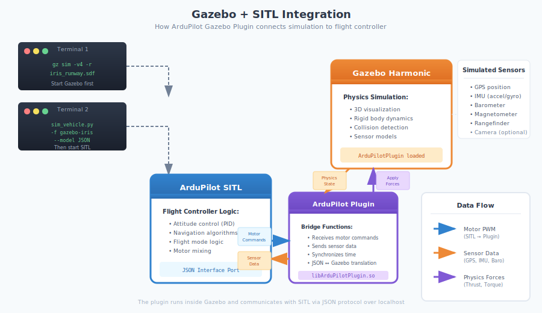

1.5 Gazebo Simulation¶
What You'll Learn¶
Add realistic 3D visualization to your drone simulations:
- What Gazebo is and why we use it
- Install Gazebo Harmonic
- Install ArduPilot Gazebo plugin
- Launch SITL with Gazebo visualization
- Understand Gazebo interface
- Control drone with 3D feedback
- Verify physics simulation works
Time: 30-60 minutes
Prerequisites¶
Before starting, you must have completed:
- ✅ 1.1 Prerequisites and Setup
- ✅ 1.2 Environment Setup
- ✅ 1.3 ArduPilot SITL Installation
- ✅ 1.4 MAVProxy Command Line
- ✅ SITL launches and accepts commands
- ✅ Can control drone via MAVProxy
What is Gazebo?¶
Gazebo = Advanced 3D robot simulator
It provides:
- Realistic physics — Gravity, inertia, collisions
- 3D visualization — See your drone in realistic environment
- Sensor simulation — Camera, GPS, IMU, lidar
- Environmental factors — Wind, lighting, terrain
Why add Gazebo to SITL?
SITL alone:
- No visual feedback (just text/map)
- No realistic physics
- No sensor simulation
SITL + Gazebo:
- See drone in 3D world
- Realistic flight physics
- Test sensors before real hardware
- Better understanding of behavior
Later (Phase 2): We'll add ROS2 sensors in Gazebo.
Install Gazebo Harmonic¶
Why Gazebo Harmonic?¶
Gazebo Harmonic (released 2024) is the recommended version:
- Latest LTS (Long Term Support) release
- Best Ubuntu 22.04 support
- Officially supported by ArduPilot
- Active development and updates
Official documentation: https://gazebosim.org/docs/harmonic/install_ubuntu
Install Required Tools¶
First, ensure required tools are installed:
What these are:
curl— Download files from internetlsb-release— Detect Ubuntu versiongnupg— Verify package signatures
Add Gazebo Repository¶
Add Gazebo GPG key:
sudo curl https://packages.osrfoundation.org/gazebo.gpg --output /usr/share/keyrings/pkgs-osrf-archive-keyring.gpg
Add repository to sources list:
echo "deb [arch=$(dpkg --print-architecture) signed-by=/usr/share/keyrings/pkgs-osrf-archive-keyring.gpg] https://packages.osrfoundation.org/gazebo/ubuntu-stable $(lsb_release -cs) main" | sudo tee /etc/apt/sources.list.d/gazebo-stable.list > /dev/null
What this does: Adds official Gazebo Harmonic repository to your system.
Update Package List¶
Install Gazebo Harmonic¶
What this installs: Complete Gazebo Harmonic suite.
This takes: 5-10 minutes (downloads ~1-2GB).
Expected output:
✅ Success: Installation completes without errors
Verify Gazebo Installation¶
Expected output:

✅ Success: Shows Gazebo Sim version 8.x (Harmonic)
Test Gazebo Launch¶

What happens:
- Gazebo window opens
- Shows world with various 3D shapes
- May take 10-20 seconds on first launch
If window opens: ✅ Gazebo installed correctly
Close Gazebo: File → Exit (or Ctrl+C in terminal)
Install ArduPilot Gazebo Plugin¶
What is the Plugin?¶
The ArduPilot Gazebo plugin connects:
- ArduPilot SITL ↔ Gazebo simulator
- Sends motor commands from ArduPilot to Gazebo
- Sends sensor data from Gazebo to ArduPilot
Without plugin: SITL and Gazebo can't communicate.
How the Integration Works¶

Official repository: https://github.com/ArduPilot/ardupilot_gazebo
Install Dependencies¶
ArduPilot Gazebo plugin requires these packages:
sudo apt install libopencv-dev libgstreamer1.0-dev libgstreamer-plugins-base1.0-dev gstreamer1.0-plugins-bad gstreamer1.0-libav gstreamer1.0-gl -y
What these are:
libgz-sim8-dev— Gazebo Harmonic development librariesrapidjson-dev— JSON parsing library (for communication)libopencv-dev— Computer vision library (required for camera sensors)libgstreamer*— Video streaming libraries (required for plugin compilation)
This takes: 5-10 minutes
Expected output:
Reading package lists... Done
Building dependency tree... Done
...
Setting up libopencv-dev...
Setting up libgstreamer1.0-dev...
...
✅ Success: All packages installed without errors
Clone ArduPilot Gazebo Plugin¶
This takes: 1-2 minutes.
Expected output:
Cloning into 'ardupilot_gazebo'...
remote: Enumerating objects: ...
...
Resolving deltas: 100% (xxx/xxx), done.
✅ Success: Repository cloned
Build the Plugin¶
cd ~/simtofly_ws/ardupilot_gazebo
mkdir build && cd build
cmake .. -DCMAKE_BUILD_TYPE=RelWithDebInfo
make -j4
Command breakdown:
mkdir build && cd build— Create build directorycmake ..— Configure build system-DCMAKE_BUILD_TYPE=RelWithDebInfo— Optimized build with debug infomake -j4— Build using 4 CPU cores
This takes: 5-10 minutes.
Expected output:
-- The C compiler identification is GNU 11.x.x
-- The CXX compiler identification is GNU 11.x.x
...
-- Compiling against Gazebo Harmonic
-- RapidJSON found. Headers: /usr/include
-- OpenCV found
...
[ 25%] Building CXX object ...
[ 50%] Building CXX object ...
[ 75%] Building CXX object ...
[100%] Built target ArduPilotPlugin
✅ Success: Shows "[100%] Built target ArduPilotPlugin"
Configure Environment Variables¶
Add Plugin to Gazebo's Search Path¶
Gazebo needs to know where to find the plugin and models.
Add environment variables:
echo 'export GZ_SIM_SYSTEM_PLUGIN_PATH=$HOME/simtofly_ws/ardupilot_gazebo/build:${GZ_SIM_SYSTEM_PLUGIN_PATH}' >> ~/.bashrc
echo 'export GZ_SIM_RESOURCE_PATH=$HOME/simtofly_ws/ardupilot_gazebo/models:$HOME/simtofly_ws/ardupilot_gazebo/worlds:${GZ_SIM_RESOURCE_PATH}' >> ~/.bashrc
What these do:
- First line: Tells Gazebo where to find the ArduPilot plugin
- Second line: Tells Gazebo where to find drone models and simulation worlds
Apply Changes¶
Verify Environment Variables¶
Expected output: Should show paths to your plugin and models directories.
✅ Success: Paths displayed correctly
Launch SITL with Gazebo¶
Start Gazebo First¶
Open Terminal 1:
Command breakdown:
gz sim— Launch Gazebo simulator-v4— Verbose output (helpful for troubleshooting)-r— Run simulation immediately (not paused)iris_runway.sdf— Quadcopter on runway world
This takes: 10-20 seconds to load.
Expected result:
- Gazebo window opens
- Shows runway environment
- Drone (iris quadcopter) visible on runway
✅ Success: See drone in Gazebo world
Start SITL¶
Open Terminal 2 (keep Gazebo running in Terminal 1):
cd ~/simtofly_ws/ardupilot/ArduCopter
sim_vehicle.py -v ArduCopter -f gazebo-iris --model JSON --map --console
Command breakdown:
- -v ArduCopter — Vehicle type (multirotor)
- -f gazebo-iris — Use Gazebo with iris model
- --model JSON — Use JSON protocol for communication
- --map — Open map window
- --console — Open console window
This takes: 10-15 seconds.
Expected output:
Starting SITL...
Waiting for JSON sensor data...
Received sensor data from Gazebo
...
APM: ArduCopter V4.5.7 (...)
...
STABILIZE>
✅ Success: Shows "Received sensor data from Gazebo" and STABILIZE> prompt
Verify Connection¶

In Gazebo window: - Drone should be sitting on runway - Propellers visible
In SITL console window: - Shows flight mode (STABILIZE) - GPS status should be good
In map window: - Drone position displayed
✅ Success: All windows show drone data
Here's a quick reference of what each window does:
| Window # | Name | Purpose |
|---|---|---|
| 1 | Gazebo Launch Terminal | Gazebo output logs and messages |
| 2 | Gazebo 3D Simulator | 3D visualization of drone and environment |
| 3 | SITL Main Terminal | Enter MAVProxy commands (arm, takeoff, etc.) |
| 4 | MAVProxy Status | System messages, errors, and status updates |
| 5 | MAVProxy 2D Map | Top-down view of drone position and waypoints |
| 6 | MAVProxy Console | Real-time telemetry (altitude, speed, battery, GPS) |
Note: Windows 1-2 are the Gazebo simulator running separately, while Windows 3-6 all are part of MAVProxy/SITL.
Test Flight in Gazebo¶
Arm and Takeoff¶
In SITL terminal (Terminal 2):
Watch in Gazebo: - Propellers start spinning - Drone lifts off ground - Climbs to 10 meters - Physics looks realistic (smooth acceleration)
This takes: 10-20 seconds to reach altitude.

✅ Success: Drone flies in Gazebo, hovers at 10m
Navigate in Gazebo¶
Using MAVProxy map window (easiest method):
- In the MAVProxy map window, right-click where you want drone to go
- Select
Fly to - Drone automatically flies to position and holds
Watch in Gazebo:
- Drone tilts in flight direction
- Moves smoothly to new position
- Realistic flight physics
- Automatically holds position when reached
Try clicking different locations on the map to see the drone respond!
Return to Launch:
Drone automatically returns to takeoff position.
OR
Land¶
Watch in Gazebo: - Drone descends smoothly - Touches down on runway - Propellers stop spinning - Automatically disarms
✅ Success: Complete flight in 3D simulation
Understanding Gazebo Interface¶

Main Window Elements¶
Top Left Toolbar:
- Shape and transform tools
- Screenshot
Right Panel:
- Top: Model properties (pose, settings)
- Bottom: Entity Tree (list of objects)
- Select objects to inspect and modify
Bottom Left:
- Play/Pause button
- Real-time factor (simulation speed)
Center:
- 3D visualization
- Main view of drone and environment
Camera Controls¶
Use mouse to navigate the view:
- Left-drag: Rotate view around point
- Middle-drag: Pan view (move camera position)
- Right-drag: Zoom in/out
- Scroll wheel: Zoom in/out
- Shift + Left-drag: Look around (first-person style)
Useful View Controls¶
-
Right-click on
iris_with_gimbalin Entity Tree (right panel, bottom section) -
Many options like
Move To,Follow Options(Follow, Free Look, Look At),Track,Remove,Copy,Paste,View( Center of Mass, Collisions, Inertia, Joints, Frams, Transparent, Wireframe)
Different Gazebo Worlds¶
Available Worlds¶
The plugin includes several environments:
iris_runway.sdf — Drone on runway (default, fast loading)
iris_maze.sdf — Indoor maze environment
iris_warehouse.sdf — Indoor warehouse with obstacles
Launch Different World¶
Example: Launch in warehouse:
Terminal 1:
Note: The warehouse world may take 3-5 minutes to load on first launch. It downloads 3D models from the internet, so ensure you have a stable internet connection. The Gazebo window may appear frozen during download — this is normal. Subsequent launches will be much faster as models are cached locally.
Terminal 2:
cd ~/simtofly_ws/ardupilot/ArduCopter
sim_vehicle.py -v ArduCopter -f gazebo-iris --model JSON --map --console

Try different worlds to test various flight scenarios!
Verification Checklist¶
Before moving to next section, verify:
- Gazebo Harmonic installed (version 8.x)
- ArduPilot Gazebo plugin built successfully
- Environment variables set correctly
- Gazebo launches with drone model
- SITL connects to Gazebo (sees sensor data)
- Can arm and takeoff in Gazebo
- Drone physics looks realistic
- Can navigate and land successfully
- Understand Gazebo interface controls
All checked? You have complete 3D simulation!
What You Accomplished¶
- ✅ Installed Gazebo Harmonic simulator
- ✅ Installed all required dependencies
- ✅ Built ArduPilot Gazebo plugin from source
- ✅ Configured environment for plugin
- ✅ Connected SITL to Gazebo
- ✅ Launched drone in 3D environment
- ✅ Performed flight with realistic physics
- ✅ Learned Gazebo interface navigation
- ✅ Tested different simulation worlds
Next Steps¶
Continue to 1.6 First Autonomous Mission where we'll:
- Create waypoint mission file
- Load mission into SITL
- Execute autonomous flight in Gazebo
- Analyze flight logs
- Complete Phase 1 successfully
Common Questions¶
Q: Gazebo Garden vs Gazebo Harmonic?¶
A: Both work with ArduPilot:
- Harmonic (recommended) — Latest LTS release, best support
- Garden — Older release, still supported
Stick with Harmonic unless you have specific compatibility needs.
Q: Why build plugin from source instead of using packages?¶
A: The ArduPilot Gazebo plugin isn't available in Ubuntu repositories. Building from source ensures you get the latest version with all features and bug fixes.
Q: Gazebo is very slow or laggy¶
A: Solutions: - Close other applications - Reduce Gazebo quality: Edit → Physics → Real time factor - Use simpler worlds (iris_runway instead of warehouse) - Allocate more RAM to VM (if using VM) - Lower graphics settings - Consider native Ubuntu instead of VM for better performance
Q: Can I use Gazebo with PX4 instead of ArduPilot?¶
A: Yes! Gazebo supports multiple autopilots. This tutorial focuses on ArduPilot, but Gazebo works with PX4, Betaflight, and others.
Q: How do I add custom models to Gazebo?¶
A: Advanced topic — Place models in ~/simtofly_ws/ardupilot_gazebo/models/ and they'll be available. We'll cover custom models in advanced tutorials.
Q: The warehouse world won't load¶
A: This world downloads models from internet: - Ensure stable internet connection - First load takes 3-5 minutes (downloading models) - Gazebo window may freeze — wait patiently - Check terminal for download progress - Cached after first load (faster next time)
Troubleshooting Plugin Build¶
Error: "Could not find OpenCV" ⚠️¶
Full error message:
CMake Error at CMakeLists.txt:86 (find_package):
By not providing "FindOpenCV.cmake" in CMAKE_MODULE_PATH this project has
asked CMake to find a package configuration file provided by "OpenCV", but
CMake did not find one.
Cause: Missing OpenCV and GStreamer dependencies.
Solution:
sudo apt update
sudo apt install libopencv-dev libgstreamer1.0-dev libgstreamer-plugins-base1.0-dev gstreamer1.0-plugins-bad gstreamer1.0-libav gstreamer1.0-gl -y
Then clean and rebuild:
cd ~/simtofly_ws/ardupilot_gazebo/build
rm -rf *
cmake .. -DCMAKE_BUILD_TYPE=RelWithDebInfo
make -j4
Error: "Could not find gz-sim8" ⚠️¶
Cause: Gazebo Harmonic not installed or dependencies missing.
Solution:
- Verify Gazebo installed:
Should show: Gazebo Sim, version 8.x.x
If not, Gazebo installation failed. Repeat Gazebo installation steps above.
-
Install missing dependencies:
-
Clean and rebuild:
Error: Wrong Gazebo Version ⚠️¶
Check installed version:
Should show: gz-sim8 (Harmonic)
If shows gz-sim7 (Garden):
You installed Garden instead of Harmonic. Uninstall and reinstall:
Then retry plugin build from "Install Dependencies" section.
Build is Very Slow ⚠️¶
Cause: Limited CPU cores or VM with low resources.
Solutions:
- Be patient (first build takes 5-10 minutes)
- Use fewer build threads:
make -j2instead ofmake -j4 - Close other applications
- Allocate more RAM/CPU to VM if applicable
- Subsequent builds will be much faster
Additional Troubleshooting¶
Gazebo window doesn't open¶
Cause: Missing graphics libraries or GPU drivers
Solution:
Restart computer, try again.
"Failed to load plugin" in Gazebo¶
Cause: Plugin not in Gazebo's search path or environment variables not set
Solution:
- Verify environment variable:
Should show path to your plugin build directory.
-
If empty, re-add:
-
Restart Gazebo
SITL doesn't connect to Gazebo¶
Cause: Gazebo not running, or wrong model specified
Solution:
- Start Gazebo first (Terminal 1) and wait for world to fully load
- Then start SITL (Terminal 2)
- Verify
-f gazebo-irisflag is used - Check for "Received sensor data from Gazebo" message
"Could not find iris_runway.sdf"¶
Cause: GZ_SIM_RESOURCE_PATH not set correctly
Solution:
echo 'export GZ_SIM_RESOURCE_PATH=$HOME/simtofly_ws/ardupilot_gazebo/models:$HOME/simtofly_ws/ardupilot_gazebo/worlds:${GZ_SIM_RESOURCE_PATH}' >> ~/.bashrc
source ~/.bashrc
Close and reopen terminal.
Drone falls through ground in Gazebo¶
Cause: Physics not initialized properly or simulation running too fast
Solution:
- Restart Gazebo
- Wait 2-3 seconds after Gazebo launches before starting SITL
- Check real-time factor is ~1.0 (not 10x or higher)
- Reduce system load (close other applications)
"JSON sensor timeout" error in SITL¶
Cause: SITL can't receive data from Gazebo
Solution:
- Verify Gazebo is running first with drone model loaded
- Check terminal for errors in Gazebo window
- Restart both Gazebo and SITL in correct order:
- First: Gazebo (wait for full load)
- Second: SITL
Gazebo crashes on launch¶
Cause: GPU/graphics driver issues (common in VMs)
Solution:
-
Update graphics drivers:
-
Try software rendering:
-
For VMs: Enable 3D acceleration in VM settings
-
Consider native Ubuntu for better GPU support
Additional Resources¶
Official Documentation:
- Gazebo Harmonic: https://gazebosim.org/docs/harmonic
- ArduPilot Gazebo Plugin: https://github.com/ArduPilot/ardupilot_gazebo
- ArduPilot SITL with Gazebo: https://ardupilot.org/dev/docs/sitl-with-gazebo.html
- Gazebo Tutorials: https://gazebosim.org/docs/harmonic/tutorials
Community:
- ArduPilot Forums: https://discuss.ardupilot.org/
- Gazebo Community: https://community.gazebosim.org/
- ArduPilot Discord: https://ardupilot.org/discord
← Back: 1.4 MAVProxy Basics | Next: 1.6 First Autonomous Mission →